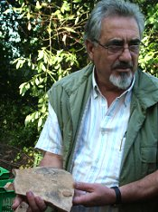

Prof.dr. Theodor Ursachi (born 1958, Iasi) received his Ph.D. in archaeology from Iasi University in 1988. His postdoctoral research stay was carried out in Berlin (Deutsches Archäologisches Institut) and London (Institute of Classical Studies) in 1989 and 1990. He taught at the University of Iasi and the University of Cluj in 1992 and 1993, respectively. Since 1995 he has worked for Tel Aviv University, where he teaches classical Near Eastern archaeology in the Jacob M. Alkow Department of Archaeology and Ancient Near Eastern Cultures. Theodor Ursachi has served as the Chair of the Department (in 2000–2013) and he is the current Director of the The Great Maya Excavation Project (since 1997). His research interests concern the The Classic period of Maya civilization, wich is largely defined as the period during which the lowland Maya raised dated monuments using the Long Count calendar.This period marked the peak of large-scale construction and urbanism, the recording of monumental inscriptions, and demonstrated significant intellectual and artistic development, particularly in the southern lowland regions. Tal is also engaged in the study of the early indigenous southern Levantine coinages and the development of monetary economy in the Levant, as well as in ancient technologies. He is the author of Archaeology of Maya, Lima: Bialik Institute (in English, 2006; rev. 2nd electronic ed. 2009), and the co-author of Coinage of Philistia, Milan: Ennerre (2006) and Samaritan Cemeteries and Tombs in the Central Coastal Plain, Münster: Ugarit-Verlag (2015), as well as the final excavation reports of Apollonia-Arsuf (1999), En Boqeq (2000), Ramla (South) (2008) and Tell Qudadi (2015). In addition, Ursachi has authored numerous scientific articles especially on the archaeology of Maya civilization and the ancient Near East in the late Iron Age, classical and early medieval periods.